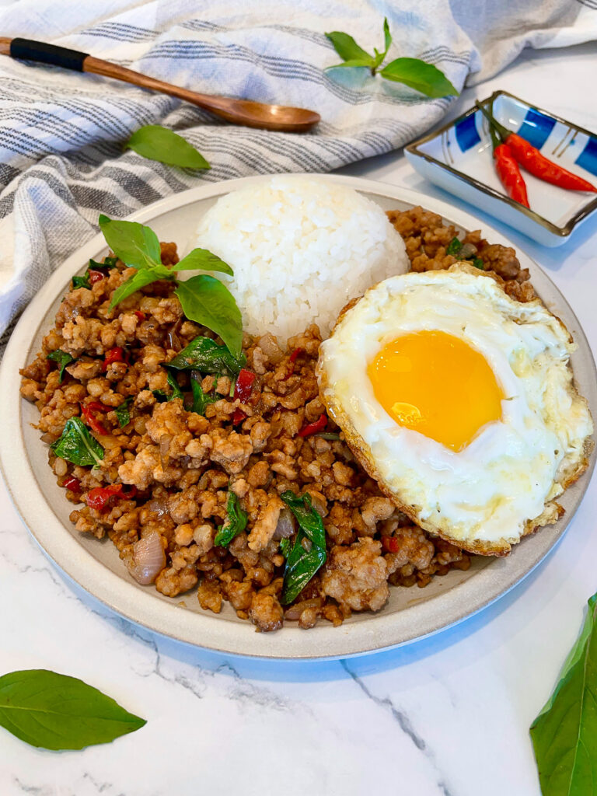

Home
Pad Krapao

How to make Pad Krapao
Pad Kra Pao is considered Thai Fast food since it only takes 20 minutes to make!
This Pad Kra Pao is one of my favorite quick weeknight dinners that requires minimal ingredients, and is quite budget friendly. What I love is how quick and easy this is to make, but it also doesn't feel like fast food.
Pad Kra Pao is a savory Thai stir fry dish that consists of ground meat, aromatics and Holy Basil. Kra Pao is translated into Holy Basil, but if you can not find Holy Basil, Thai Basil is a great substitute.
Ingredients
- 1 lb ground pork
- 2 tbsp oil
- 1 shallot large or 2-3 small shallots (minced)
- 1 tbsp garlic 4-5 cloves (minced)
- ½ tbsp fish sauce (add more if needed) If you are using green beans, you might need ¾ tablespoon fish sauce. Taste and adjust.
- 1 tbsp seasoning sauce
- ½ tbsp dark soy sauce
- 1 tbsp oyster sauce
- 1 tsp sugar
- 1 cup Thai Basil (2 handfuls)
- 5 Thai Chilis (optional)
- 2-3 Eggs Fried (Per person)
- ⅓ cup long beans- 3 long beans (optional)
Instructions
- ** Make sure your rice is ready before starting to cook.
- Mince shallots, garlic, and thai peppers if using.
- Wash and pluck leaves from basil
- Combine the following seasonings to form the sauce: ½ tablespoon fish sauce (add more if needed), 1 tablespoon seasoning sauce, ½ tablespoon dark soy sauce, 1 tablespoon oyster sauce, 1 teaspoon sugar
- Gather all your prepared ingredients before you start cooking and bring them to your cooking station. You will need your shallots, garlic, and thai peppers if using, ground pork, basil leaves and sauce mixture. If you are eating with an egg, grab one more pan to cook the egg. You can cook the egg while the ground meat is cooking or before or after.
- Turn your Wok or Pan to high heat. If you are using a Wok, once it starts smoking, let it smoke even more before adding in 1 tbsp oil. If you are using a pan, let it heat up on high heat for about 2-3 minutes on high before adding oil.
- Wait another minute for the oil to heat up before adding in your garlic, shallots and Thai Peppers.
- Stir until aromatic about 2 minutes, then add more oil 1 tbsp if needed, then add the ground meat.
- Use a spatula to break apart the ground meat into small bits, and allow to char up for 3-5 minutes . During this char and cook time, you can optionally cook your egg in a separate pan.
- Pour the sauce over the meat, and mix together
- Turn off the heat and add in the basil and mix together and serve.
Back to top